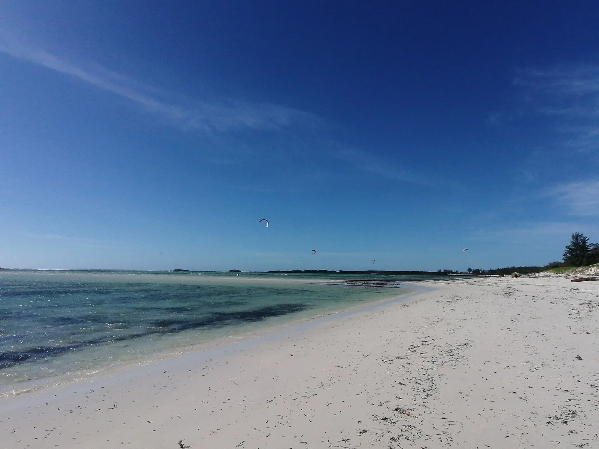

Baie de Sakalava
Antsiranana, Madagascar · kitesurf, windsurf

Grande baie à l’est de Diego-Suarez, protégée par une barrière de corail, où souffle un alizé de sud-est puissant et régulier, le varatraza, surtout d’avril à novembre.
- Lieu
- Antsiranana, Madagascar
- Niveau
- Intermédiaire
- Activités
- kitesurf, windsurf
- Type d'eau
- Mer / océan
- Coordonnées
- -12.26, 49.40 (position approximative du secteur)
Dangers à connaître
- Alizé très fort en saison : prévois une petite aile ou une petite voile.
- Barrière de corail et hauts-fonds à marée basse.
Le conseil d'Ocean Buddy
Navigue à l’intérieur du lagon : au-delà de la barrière, le vent et la mer deviennent beaucoup plus forts.
Ouvrir dans Ocean Buddy Télécharger sur l'App Store
Source : Fiche Ocean Buddy · septembre 2026 · à vérifier localement.